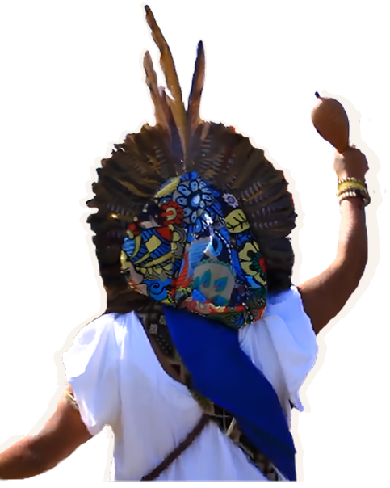
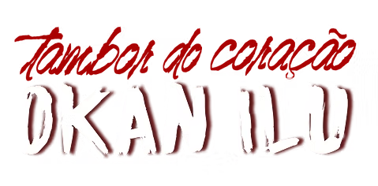
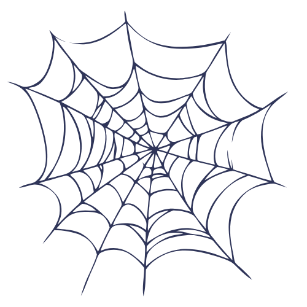
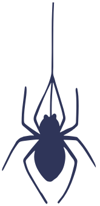

Iniciado em 2015, o Okan Ilu é um evento-ritual que ocorre na Comunidade Kilombola Morada da Paz – Território de Mãe Preta (Triunfo/RS), comunidade composta majoritariamente por mulheres negras. Desde o seu surgimento, trata-se de um encontro e partilha cultural e artística dos povos negros e indígenas. Desde de 2018 passou a ser um espaço de encontro e partilha da Multiversidade dos Povos da Terra de Mãe Preta

LINHA DO TEMPO
2017
Em 2017 que iniciou o encontro de Mãe Preta, jovem Coletivo Nós por Nós, Ilê da Coxa e da Casa Poética... Encontro Marcado de Paz com uma mostra/inventário de ações locais...
2018
Em 2018 o Coletivo de Literatura Silarte da Paz Inicia o "Projeto Mosaicos"... primeiros saraus nas cidades do Brejo, CRAS/CREAS e Rede de Saúde Mental... Escuta, acolhida e intercâmbio local, para Utopias Vizinhas e globais.

2019
A celebração de Lembrr segue em Ideias. Em 2019 foi fundado o programa "Janelas para além dos Muros" (Lápos)... movimento de inventividade cultural do BR-Mx. Principais eixos: Incentivar a leitura, direito à cidade, potencializar e celebrar a existência dos povos negros e Indígenas na região.
2020
O Okan Ilu em 2020, além da realização da "Parada de leitura: narrativas vivas", cria e/ou potencializa... etc. alimentados e desenvolvidos pelo Centro Alternativo de Cultura (CAC) em 2020. Com sementes que tombaram na luta, mas que jamais serão esquecidas.
2021
A "Parada de Leitura" vem com o apoio da UNESCO para o Programa Transatlântico de Mutualidade. Uma pequena "grana" e muito fôlego para aquecer o coração. Em 2021... etc. oficinas sobre o movimento de Ocupar para os jovens das Periferias.
2022
Okan Ilu de 2022 foi em eComenda de Mãe Preta e todo o Centro de Atividades Alternativas (CAL). Okan Ilu é elemento principal/eixo dos processos de Autonomização na Microrregião de Mãe Preta, no Coração do Brejo.